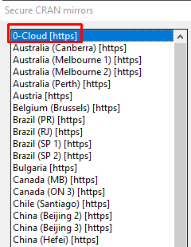
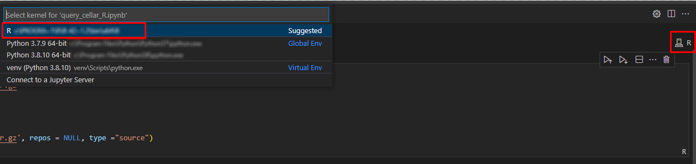
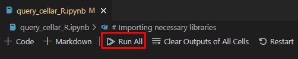
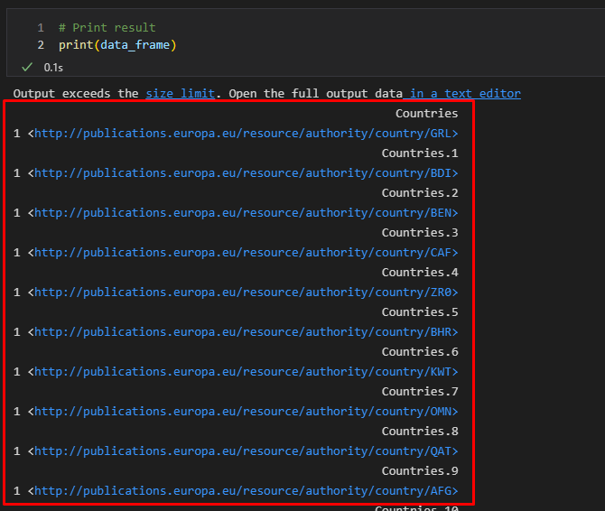

Jupyter Notebook - R
This section shows an example using Jupyter Notebook in R language. R is software environment for statistical computing and graphic representation. In this case, R represents the programming language for writing notebook documents. To realize the proposed scenario, it is necessary to install the special tools (Running R Jupyter Notebooks) and use the R code that will perform a query (SPARQL with R) to the cellar and display the results in tabular form.
To run R sample:
-
Install & install R language:
-
Windows 64bit: download
-
-
Download Jupyter Notebook file: https://github.com/OP-TED/ted-rdf-conversion-pipeline/blob/main/notebooks/query_cellar_R.ipynb
-
Download SPARQL package archive and put in same folder as Notebook file: download SPARQL
-
Install IRKernel:
-
Run R in OS command line and type:
install.packages("IRkernel") install.packages('RCurl') install.packages('XML')
-
In appeared window, select the first mirror and press OK: 
-
After installation is completed, type:
IRkernel::installspec()
-
Open Jupyter Notebook file in your favourite code editor (e.g VS Code);
-
Select R interpreter;

-
Run All the Notebook Cells (example in VS Code):

After the execution on last output cell we can see results:

References
-
“Running R Jupyter Notebooks in VS Code.” n.d. Practical Data Science. https://www.practicaldatascience.org/html/jupyter_r_notebooks.html
-
“SPARQL with R.” 2013. R-bloggers. https://www.r-bloggers.com/2013/01/sparql-with-r-in-less-than-5-minutes/https://www.r-bloggers.com/2013/01/sparql-with-r-in-less-than-5-minutes/]